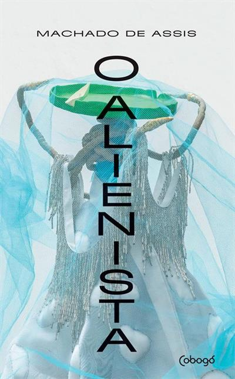

O alienista é um clássico literário sobre a psiquê. Qual é o limite entre a loucura e a sanidade? Até onde a ciência é capaz de desvendar a mente humana? Essas são as questões centrais desta obra publicada originalmente como folhetim na revista A Estação. O conto apresenta Simão Bacamarte, estudioso ilustrado, que, para aprender mais sobre a psiquiatria, convence a cidade de Itaguaí a fundar um hospício. Logo a instituição fica repleta de lunáticos locais e das vilas vizinhas. O cientista passa, então, a identificar a demência recôndita em cada cidadão de Itaguaí, encarcerando-os um a um no manicômio e levando o terror à cidade. O barbeiro Canjica arregimenta os insatisfeitos para derrubar o hospício da Casa Verde e se instauram a paranoia e a revolta no povoado, antes pacato. O alienista foi adaptado para o cinema em 1970 e para uma minissérie na TV em 1993. Em 2008, a obra chegou às histórias em quadrinhos e, em 2014, ao teatro. Um livro divertido, que traz o melhor da ironia machadiana. Esta edição tem texto integral e traz notas explicativas para os termos não usuais, para facilitar a compreensão da obra.